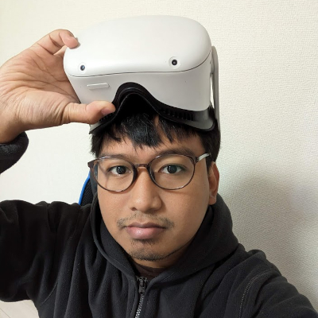

Hanif Fermanda Putra
A highly motivated researcher and developer with PhD in Computer Engineering. Experienced in Human-Computer Interaction (HCI), specializing in interaction devices and XR (Extended Reality) technologies. Possesses a strong background in Research and Development, contributing to innovative projects and pushing the boundaries of interactive experiences. Expertise includes interaction devices including IoT, user interface design, simulation, and machine learning. Adept at prototyping and data analysis, passionate about creating interactive technologies. I'm now a research fellow in Saitama Prefecture, Japan.Publication
International Journal (Peer-reviewed)
-
Hanif Fermanda Putra, Kohichi Ogata
Navigating through Google Maps using an eye-gaze interface system
International Journal of Innovative Computing, Information and Control (IJICIC), Volume 18, No. 2, pp.417-432.
International Conference (Peer-reviewed)
-
Hanif Fermanda Putra, Kohichi Ogata
Seamless gaze gesture interactions with various devices without moving objects as visual stimulation
Proceedings of the 10th International Conference on Computer and Communications Management (ICCCM), pp.73-78 -
Hanif Fermanda Putra, Kohichi Ogata
Development of eye-gaze interface system and its application to virtual reality controller
Proceedings of the 2018 International Conference on Computer Engineering, Network and Intelligent Multimedia (CENIM), pp. 208-213.
Domestic Conference
-
Hanif Fermanda Putra
機械学習による卓球スイングアシストのための視覚的ガイド表示システムの検討
2023マルチメディア・仮想環境基礎 (MVE) -
Hanif Fermanda Putra, Kohichi Ogata
Prototype development of Google Maps navigation control using eye-gaze interface system
2020電気・情報関係学会九州支部連合大会 (JCEEE九州) -
Hanif Fermanda Putra, Kohichi Ogata
Evaluation of visible light cameras towards better quality of eye-tracking devices
2020電気・情報関係学会九州支部連合大会 (JCEEE九州) -
Hanif Fermanda Putra, Kohichi Ogata
Development of a controller in a virtual reality environment using eye-gaze interface system
2018電気・情報関係学会九州支部連合大会 (JCEEE九州)
Patent
-
Hanif Fermanda Putra
特開2024-126176
処置対象に対する処置を提案するプログラム、装置、システム及び方法
Educational Background
- [Sep, 2022] Received PhD in Engineering from Kumamoto University, Kumamoto, Japan
- [Oct, 2019] Enrolled in PhD Program in 自然科学教育部(GSST), Kumamoto University, Kumamoto, Japan
- [Sep, 2019] Received Master of Engineering from Kumamoto University, Kumamoto, Japan
- [Oct, 2017] Enrolled in Master Program in 自然科学教育部(GSST), Kumamoto University, Kumamoto, Japan
- [Sep, 2016] Received Bachelor of Engineering from Institut Teknologi Sepuluh Nopember, Surabaya, East Java, Indonesia
- [Oct, 2012] Enrolled in Departement of Electrical Engineering, Institut Teknologi Sepuluh Nopember, Surabaya, East Java, Indonesia
- [Aug, 2012] Graduated from SMAN 1 Malang, Malang, East Java, Indonesia
Employment History
- October 2022 - Present
Core Researcher in KDDI Research, Inc. - December 2020
Guest Lecturer in Electrical Engineering Department, Telkom University, Bandung, Indonesia - July 2019 - December 2021
Research and Development Staff in 株式会社ナレッジコミュニケーション, Kumamoto, Japan - June 2016 - December 2016
Research Assistant in Computer Engineering Departmen, Institut Teknologi Sepuluh Nopember, Surabaya, East Java, Indonesia - June 2015 - August 2015
Research and Development Staff (intern) in Equnix Bussiness Solution Co. Ltd., Jakarta, Indonesia - September 2014 - September 2016
Laboratory Assistant in B201 Telematics Laboratory, Departement of Electrical Engineering , Institut Teknologi Sepuluh Nopember, Surabaya, East Java, Indonesia - September 2014 - August 2015
Teaching Assistant in B201 Telematics Laboratory, Departement of Electrical Engineering , Institut Teknologi Sepuluh Nopember, Surabaya, East Java, Indonesia
Award and Achievement
-
Best Presentation Award of the 10th International Conference on Computer and Communications Management ()
July 2022, The 10th International Conference on Computer and Communications Management (ICCCM) -
次世代研究者挑戦的研究プログラム / Next Generation Researcher Program
October 2021 - September 2022, Japan Science and Technology Agency (JST) -
Toyota Tsusho Scholarship
April 2020 - March 2022, Toyota Tsusho Corporation -
決勝進出者 MAIDリーグ2019 ヒーローズリーグ / Finalist Heroes Leagues 2019
November 2019, ヒーローズリーグ -
2018 Excellent Presentation Award of the IEEE Fukuoka Section ()
February 2018, IEEE Fukuoka Section -
文部科学省 MEXT Scholarship
October 2017 - September 2019, Ministry of Education, Culture, Sports, Science and Technology of Japan
Test Scores
-
Japanese Language Proficiency Test (JLPT) N3
July 2019, Passed -
TOEIC® Listening & Reading
June 2021, 975